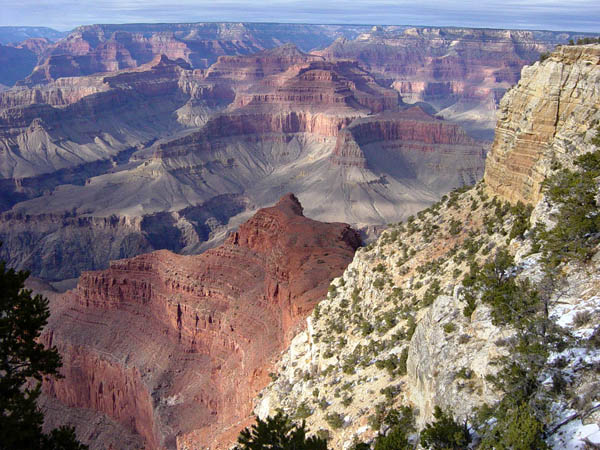

Featured Destination

The Grand Canyon The Canyon is an overwhelming experience, and nothing can prepare a visitor for the sight. The Grand Canyon is a massive canyon carved over several million years by the Colorado River. Grand Canyon National Park boasts an elevation change of nearly 7,000 feet (2130 m) from Point Imperial (at nearly 9,000 feet or 2740 m) to the banks of Lake Mead (at just over 2,000 feet or 610 m). The canyon itself is, from rim to river over a mile (1610 m) deep. In spots the rock layers exposed in the canyon display over two billion years of geologic history.